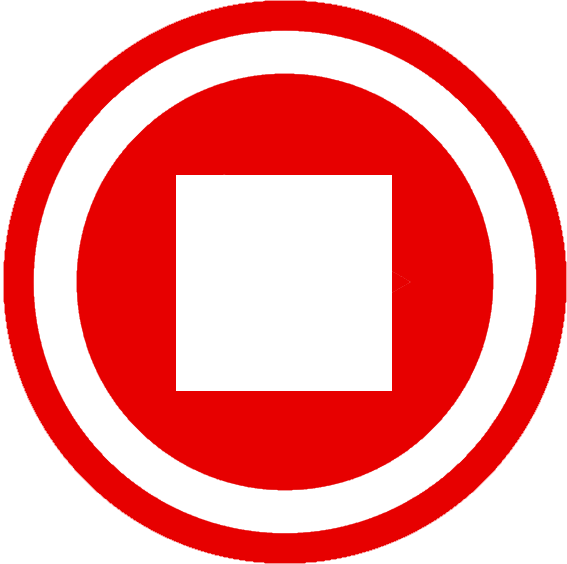

<ion-header>
  <ion-toolbar style="--background: transparent;">
    <ion-buttons slot="start">
      <ion-button (click)="backButton()">
        <ion-icon name="chevron-back-outline" style="color: red;"></ion-icon>
      </ion-button>
    </ion-buttons>

    <ion-buttons slot="end">
      <ion-menu-button autoHide="false" style="color: red;"></ion-menu-button>
    </ion-buttons>
  </ion-toolbar>
</ion-header>

<div class="ion-page" id="main-content">
  <ion-content id="mainContent" class="ion-padding">
    <ion-grid>
      <ion-row ion-justify-content-center ion-align-items-center style="display: block; text-align: center; margin-top: 10vw">
        
      </ion-row>
      
      <ion-row *ngIf="dicas.length <= 0" ion-justify-content-center ion-align-items-center style="display: block; text-align: center; margin-top: 10vw">
        <div style="margin-top: 5vw">
          <ion-card style="width: 80vw; margin: auto; opacity: 0.8;">
            <ion-card-content style="background: black; display: grid;">
              <label style="color: white; font-size: 7vw; text-decoration: underline red;">Ainda não foram solicitadas dicas.</label>
            </ion-card-content>
          </ion-card>
        </div>
      </ion-row>
    
      <ion-row *ngIf="dicas.length > 0" ion-justify-content-center ion-align-items-center style="display: block; text-align: center; margin-top: 10vw">
        <div scrollY="true" id="myFixZone" class="fixed" style="margin-top: -2vw; border-bottom: solid 1px rgba(128, 128, 128, 0.25); background: linear-gradient(0deg, rgba(0,0,0,1) -10%, rgba(116,114,114,0) 30%, rgba(116,114,114,0) 50%);">
          <ion-list inset="true" style="background: transparent;">
            <ion-item *ngFor="let dica of dicas; let index = index" style="--background: transparent; border-bottom: solid red 1px; margin-bottom: 3vw;">
              <ion-col style="text-align: center;" (click)="selecionarDica(dica, index + 1)">
                <label style="margin-left: 2vw;"> {{(index + 1) + 'ª dica'}} </label>
              </ion-col>
            </ion-item>
          </ion-list>
        </div>
      </ion-row>

      <ion-row *ngIf="dicaSelecionada" ion-justify-content-center ion-align-items-center style="display: block; text-align: center; margin-top: 10vw">
        <div style="margin-top: 5vw">
          <ion-card style="width: 80vw; margin: auto; opacity: 0.8;">
            <ion-card-content style="background: black; display: grid;">
              <label style="color: white; font-size: 7vw; text-decoration: underline red;"> {{dicaSelecionadaIndex + 'ª dica'}}</label>
              <label style="color: white; font-size: 4.5vw; margin-top: 2vw;"> {{dicaSelecionada.dica}}</label>
              
              <label *ngIf="dicaSelecionada.imagem" style="display: contents;">
                
              </label>
              <label *ngIf="dicaSelecionada.index === 18 && !listenTocTocActive">
                
              </label>
              <label *ngIf="dicaSelecionada.index === 18 && listenTocTocActive">
                
              </label>
              <label *ngIf="dicaSelecionada.index === 18" style="font-size: 3vw; margin-top: -4vw; margin-bottom: 13px;">
                Essa dica possuí um audio.
              </label>
            </ion-card-content>
          </ion-card>
        </div>
      </ion-row>
    </ion-grid>


  </ion-content>
</div>
